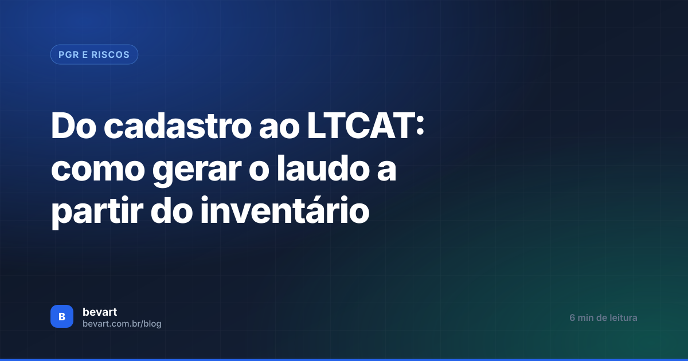
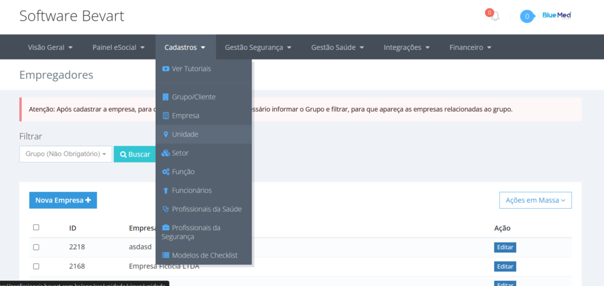
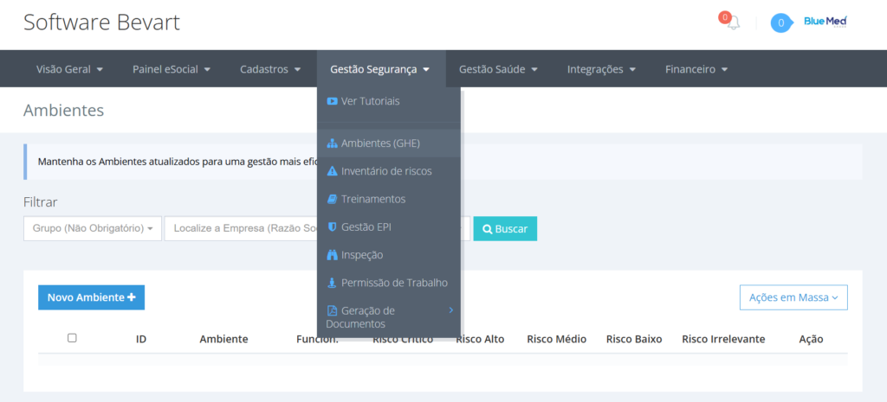
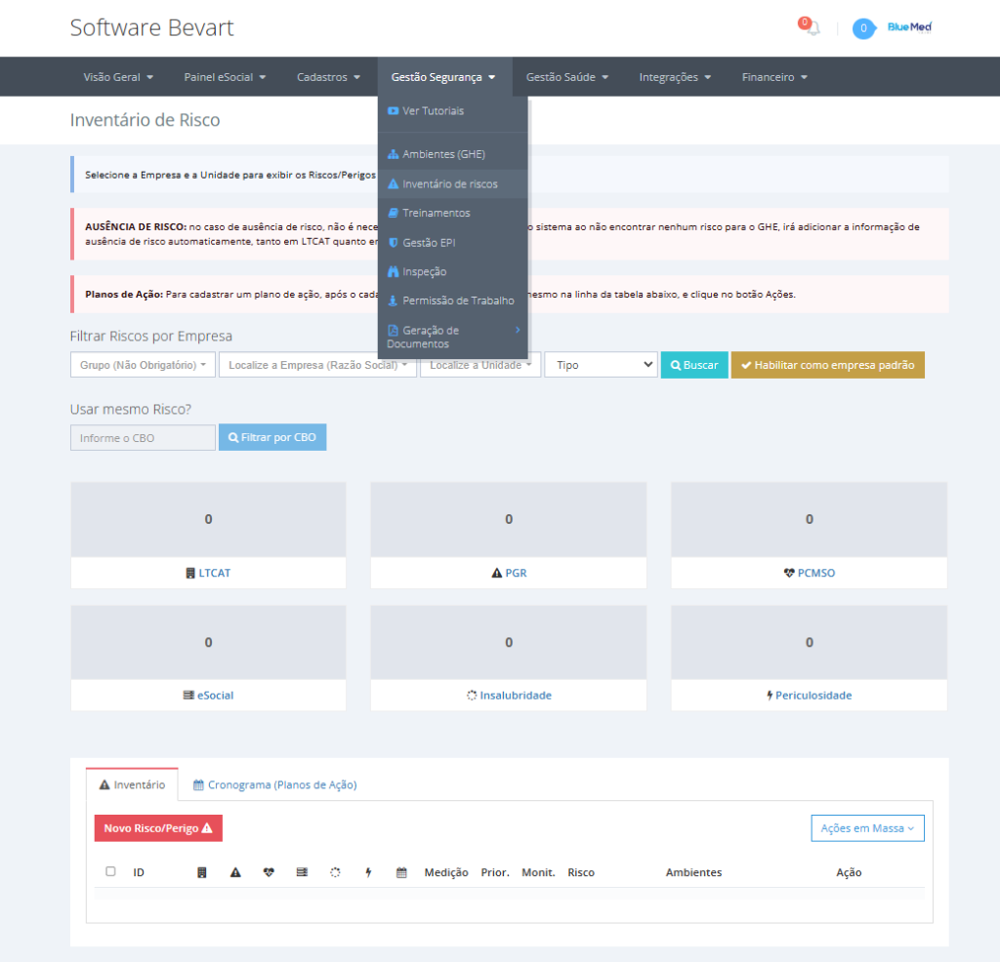
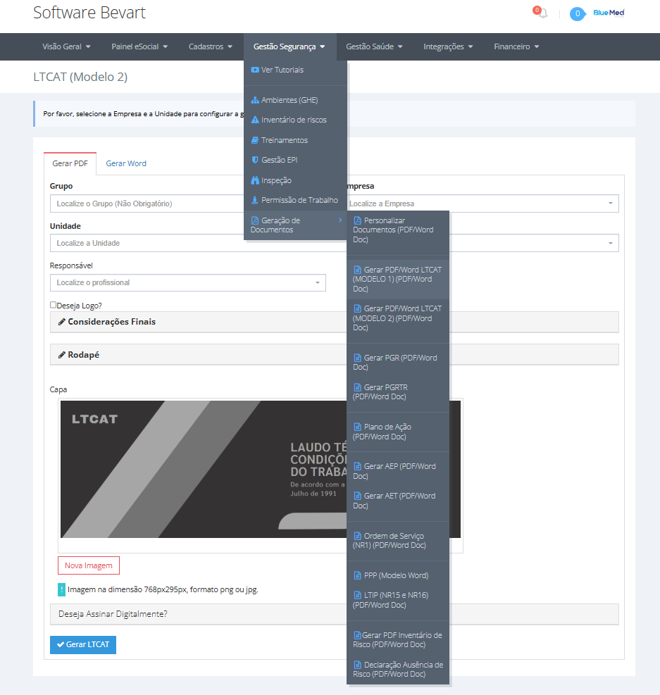

Do cadastro ao LTCAT: como gerar o laudo a partir do inventário
Setor, empresa, unidade, ambiente e inventário de riscos são cadastros que você faz uma vez. Depois disso, o LTCAT deixa de ser redação e vira geração.

O essencial em 30 segundos
- A configuração inicial — setor, empresa e unidade — é feita uma única vez.
- O GHE aparece no sistema como Ambiente, e é dele que o inventário de riscos parte.
- Com o inventário pronto, o LTCAT sai em PDF (dois modelos) e pode ser assinado dentro do sistema.
Quem chega ao sistema com um LTCAT para entregar quer pular direto para a geração do PDF. Só que o laudo é consequência: ele descreve ambientes e exposições que precisam existir no cadastro antes. A boa notícia é que esse trabalho é feito uma vez — depois, o documento é gerado quantas vezes for preciso.
1. Cadastros: setor, empresa e unidade
No menu Cadastros, registre nesta ordem:
- Setor — os setores da operação, quando fizer sentido separar;
- Empresa — os dados da empresa principal;
- Unidade — cada filial. Se não houver filial, cadastre a unidade igual à empresa principal.

É a unidade que organiza documentos, acessos do cliente e envio de eventos. Empresa sem filial também precisa de uma unidade cadastrada — é ela que recebe os documentos.
2. Ambiente: o GHE do sistema
Em Gestão de Segurança → Ambiente (GHE), cadastre os ambientes da empresa. O Bevart trata o Grupo Homogêneo de Exposição como Ambiente: é o agrupamento de quem está sujeito às mesmas condições.

3. Inventário de riscos
Com os ambientes prontos, registre o inventário de riscos. Cada perigo entra ligado ao ambiente em que aparece, com a avaliação correspondente. Se o risco mudar depois, você atualiza o registro — não recomeça o documento.

Esse é o ponto que define a qualidade de tudo que vem depois. Se precisar de método para essa etapa, veja como montar o inventário e o plano de ação do PGR.
Cadastro uma vez, documentos a vida toda
Ambiente e inventário alimentam LTCAT, PGR, PCMSO e o S-2240 do eSocial. Atualizou o risco, os documentos seguintes já nascem corretos.
Criar conta grátis4. Gerar o LTCAT
Vá em Gestão de Segurança → Geração de Documentos → Gerar PDF LTCAT. O sistema oferece dois modelos de laudo, com capa personalizável e outras configurações de apresentação.

O PDF pode ser assinado dentro do próprio sistema, o que fecha o ciclo sem exportar o arquivo para outro serviço de assinatura.
O laudo é a base técnica do que a empresa declara no S-2240 e, por consequência, do PPP eletrônico do trabalhador. Divergência entre o laudo e o evento aparece anos depois, no pedido de aposentadoria especial — e aí a correção é bem mais cara.
O que você ganha com essa ordem
- Praticidade: os cadastros iniciais não se repetem.
- Flexibilidade: mudou o risco, atualiza o registro e regera o documento.
- Integração: o mesmo dado serve a vários documentos, sem redigitação.
- Personalização: dois modelos de LTCAT e capa configurável.
Perguntas frequentes
Preciso cadastrar unidade se a empresa não tem filial?
Sim. Nesse caso, cadastre a unidade com os mesmos dados da empresa principal — é a unidade que organiza documentos, acessos e envios.
O que é Ambiente no sistema?
É como o Bevart chama o Grupo Homogêneo de Exposição (GHE): o agrupamento de trabalhadores sujeitos às mesmas condições de exposição, que serve de base para o inventário de riscos e para os documentos.
Com que frequência devo gerar o LTCAT novamente?
Sempre que os dados que o embasam mudarem: novo ambiente, alteração de processo, nova medição ou mudança nas condições de exposição. O laudo precisa refletir a realidade atual da empresa.
Dá para assinar o laudo sem sair do sistema?
Sim, o PDF gerado pode ser assinado dentro do próprio Bevart, sem exportar para outro serviço de assinatura digital.